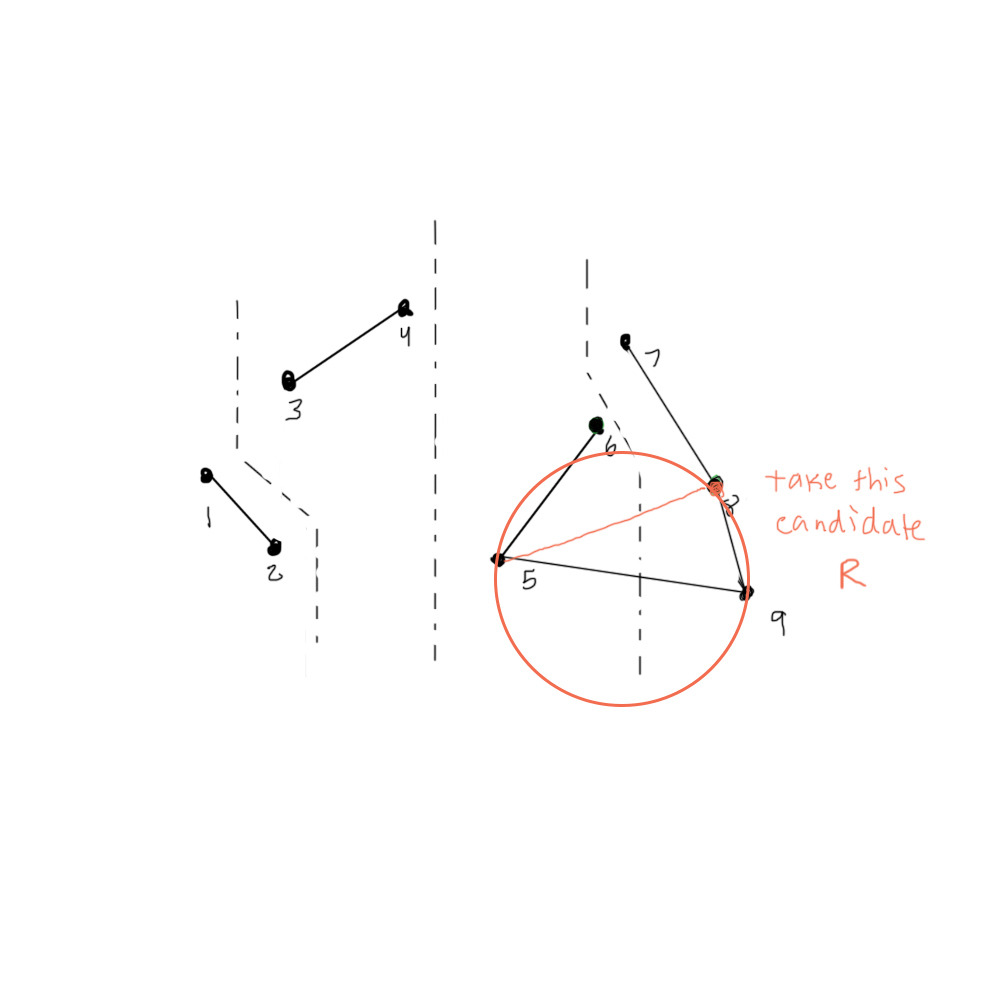
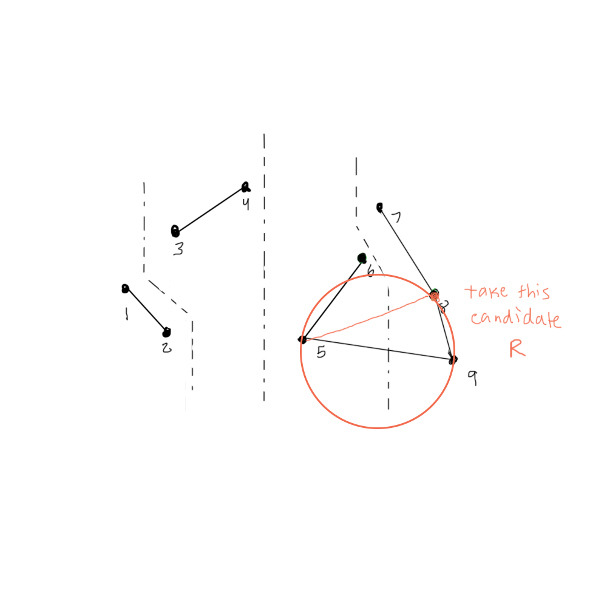
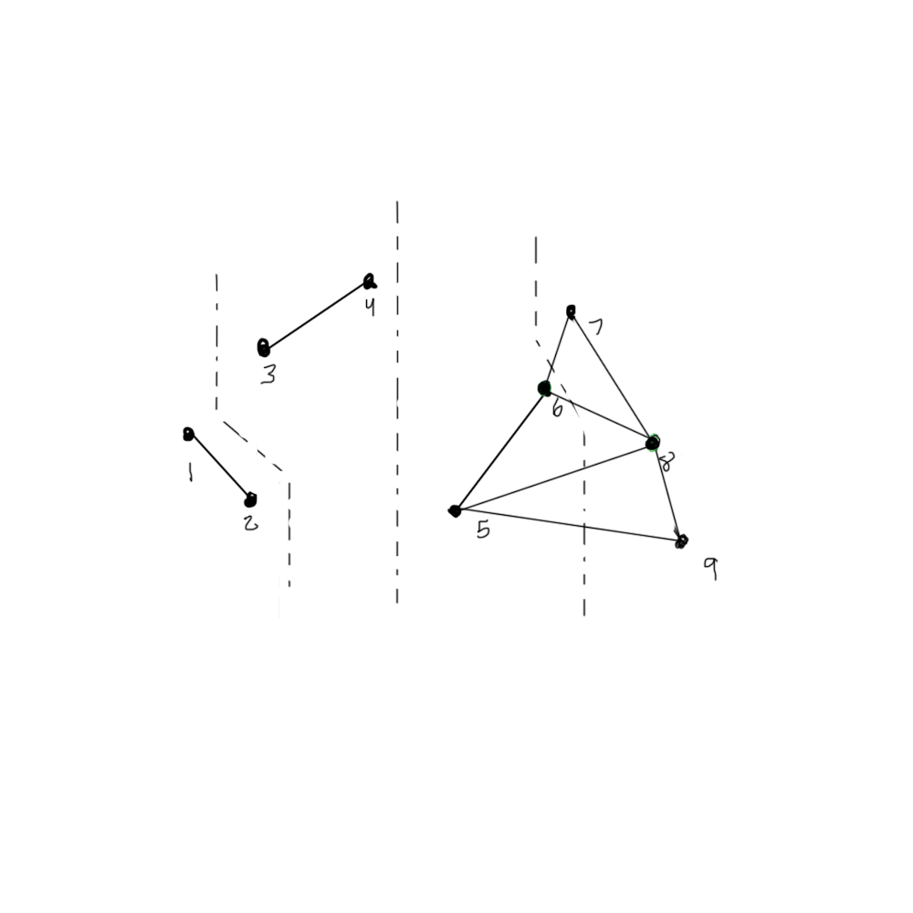
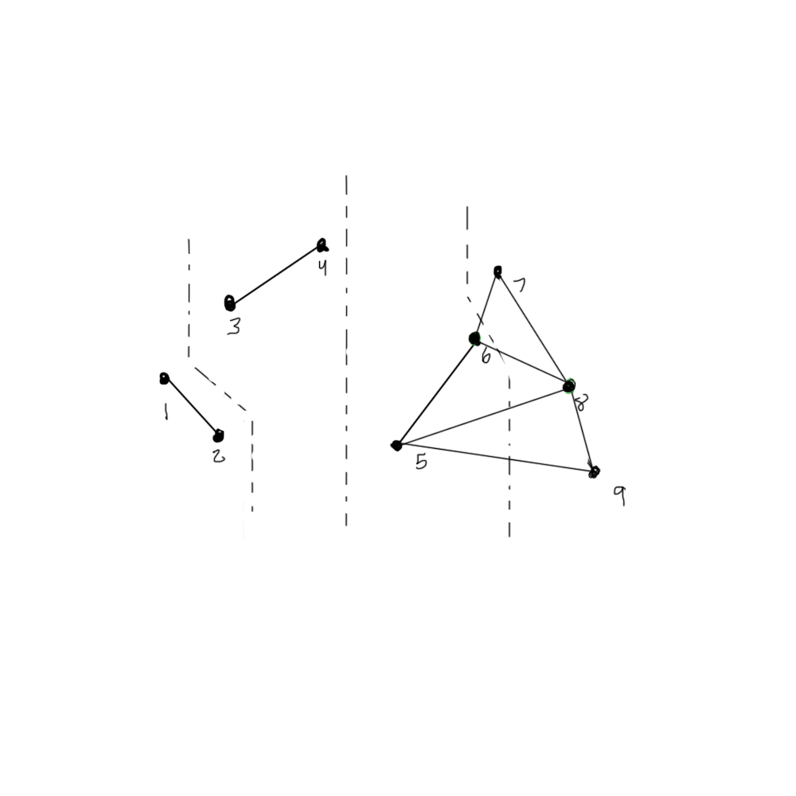

The Problem
Create edges between a set of points such that any “network” distance between two points is only a factor of Euclidean distance of two points. Given a set of n points, construct a graph such that for any point Vi and Vj, the detour ratio t = d(G)(Vi, Vj)/d(E)(Vi, Vj) is a small constant.
Trivial solution
If we create a complete graph G connecting every point, we get a ratio t that is constant since all edges will have edges to each other. However this is expensive to store and maintain as we will have O(v2) edges.
So how can we create a subset of complete graph G such that the number of edges = O(V) and t = low constant? Enter Delaunay triangulations!
Definition
A Delaunay Triangulation is a special type of triangulation where a circumcircle drawn around any 3 points forming a triangle inside of G do not contain any vertices of G inside. As a result, the Delaunay triangulation maximizes the smallest angle of G. While there are numerous possible triangulations for any graph, a Delaunay triangulation is unique for every point set, assuming general position - that is no 4 points are on the same circle.
TBA: Unique attributes and additional properties here
Algorithm
The algorithm defined hereafter is a divide and conquer type algorithm created by Guibas and Stolfi.
The algorithm has three major parts:
Ordering every point based on x-coordinate
Dividing points until a base case of 2-3 points is reached
Merging local Delaunay triangulations until all sub-graphs have been merged
The first part is a trivial sort, which can be done in O(nlogn) time.
The second part divides the point sets into 2 groups and recurses on each part, until every group is size 2-3. Creating a Delaunay triangulation of 2 or 3 points is trivial - 2 points always form an edge and 3 points always form a triangle (except for a degenerate case of 3 points forming a line which will be ignored). At this step we can also find a min of each subset and store it locally - this can be done in constant time for every base case.

 The third step is perhaps most complicated. Zipping two Delaunay triangulations together often involves removing some edges and always involves adding new edges.
The third step is perhaps most complicated. Zipping two Delaunay triangulations together often involves removing some edges and always involves adding new edges.
The following is a description of a merge of two Delaunay triangulations, G1 and G2, into G3:
1. First, we need to find the base edge between G1 and G2. The unique feature of this edge is that if we extend this edge to infinity, no points exist below the base edge. It lower convex hull edge between G1 and G2. This can be found in linear time, as we're simply down the points on either side (similar to merge in the Kirkpatrick-Seidel algorithm), until we cannot walk down anymore points on both graphs. We will name the two points on this base edge L0 and R0.
1. Using L0 and R0, we create a base edge E1 that will definitely be on the merged G3, because if L0 was to be connected to any other point on G2 creating edge E1’, then R0 connected to any other vertex on G1 that isn’t L0 will necessarily cross over E1’, disturbing the planarity of G3.
 2. We then examine G1 for a potential candidate vertex L1 that might be connected to R0. We do this by stepping through vertices connected to L0, let’s call them set L, and forming circumcircles using L0, R0, and every point on set L. We step through L in order of increasing angle, starting with vertex that forms the smallest angle with edge L0-R0. When we encounter a circumcircle that does not contain any vertices on the inside, that vertex within set L becomes L1.
3. As we step through set of vertices L, we check if there are any “bad edges” that intersect edges which will connect G1 and G2 - we find and remove these while stepping through set L. If any edges form a smaller angle than angle L0, R0, and L1, i.e. if any circumcircles that contain other vertices in G1 are formed while stepping through L, we will remove the edge from L0 to that point in L. Since we know L1 will be connected to G2 at some point, we have to remove edges from L0 to points with lower degree relative to L0-R0 than L1 as these edges will cross over the newly formed G1-G2 edge from L1.
4. Steps 2 and 3 will be repeated on G2 to find candidate vertex R1.
2. We then examine G1 for a potential candidate vertex L1 that might be connected to R0. We do this by stepping through vertices connected to L0, let’s call them set L, and forming circumcircles using L0, R0, and every point on set L. We step through L in order of increasing angle, starting with vertex that forms the smallest angle with edge L0-R0. When we encounter a circumcircle that does not contain any vertices on the inside, that vertex within set L becomes L1.
3. As we step through set of vertices L, we check if there are any “bad edges” that intersect edges which will connect G1 and G2 - we find and remove these while stepping through set L. If any edges form a smaller angle than angle L0, R0, and L1, i.e. if any circumcircles that contain other vertices in G1 are formed while stepping through L, we will remove the edge from L0 to that point in L. Since we know L1 will be connected to G2 at some point, we have to remove edges from L0 to points with lower degree relative to L0-R0 than L1 as these edges will cross over the newly formed G1-G2 edge from L1.
4. Steps 2 and 3 will be repeated on G2 to find candidate vertex R1.


 5. Then, we create a circumcircle with vertices L0, R0, and L1. If this circumcircle does not contain R, we connect R0 to L1, since a circumcircle with no points inside defines a delaunay triangle. We also know no points from G2 are within this circumcircle, since R1 was the closest potential point. If the circumcircle does contain R1, we know that R1 must be connected to L0 since 4 points guarantee an existence of a Delaunay triangle, and since Delaunay triangles are unique unless all 4 points form a circle, only 1 candidate will create a triangle with L0, R0. This is shown by drawing a circumcircle with L0, R0, and R1, which will not contain L1, and thus is a valid Delaunay triangle. Choosing to form a circumcircle with L1 is completely arbitrary and forming a circle with R1 would perform the same task without loss of generality.
5. Then, we create a circumcircle with vertices L0, R0, and L1. If this circumcircle does not contain R, we connect R0 to L1, since a circumcircle with no points inside defines a delaunay triangle. We also know no points from G2 are within this circumcircle, since R1 was the closest potential point. If the circumcircle does contain R1, we know that R1 must be connected to L0 since 4 points guarantee an existence of a Delaunay triangle, and since Delaunay triangles are unique unless all 4 points form a circle, only 1 candidate will create a triangle with L0, R0. This is shown by drawing a circumcircle with L0, R0, and R1, which will not contain L1, and thus is a valid Delaunay triangle. Choosing to form a circumcircle with L1 is completely arbitrary and forming a circle with R1 would perform the same task without loss of generality.
 
6. Find a new candidate on either G1 or G2 depending on which vertex was triangulated, and repeat step 5 with newly vertices on newly formed edge and L and R candidates (only one of which will be new). Here, L0 and R0 will be replaced by two vertices on the newly formed edge between G1 and G2, and the process can be repeated again - removing any bad edges found and finding the next valid edge between G1 and G2.

6. Find a new candidate on either G1 or G2 depending on which vertex was triangulated, and repeat step 5 with newly vertices on newly formed edge and L and R candidates (only one of which will be new). Here, L0 and R0 will be replaced by two vertices on the newly formed edge between G1 and G2, and the process can be repeated again - removing any bad edges found and finding the next valid edge between G1 and G2.
 7. Repeat until no more points are available (i.e. all points connected to latest formed edge G1-G2 are below G1-G2).

This merge process will be repeated until all subgraphs have been merged into the final Delaunay triangulation
The recurrence equation for this algorithm is therefore:
T(n) = 2O(n/2) + n
Which, by master equation, produces a time complexity of O(nlogn)
7. Repeat until no more points are available (i.e. all points connected to latest formed edge G1-G2 are below G1-G2).

This merge process will be repeated until all subgraphs have been merged into the final Delaunay triangulation
The recurrence equation for this algorithm is therefore:
T(n) = 2O(n/2) + n
Which, by master equation, produces a time complexity of O(nlogn)
Chew's Algorithm/Upper bound proof
TBA